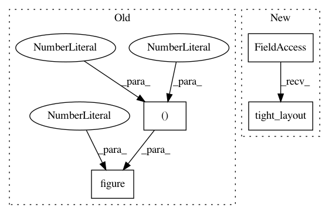

75c988f515f0a1ee51f88f5fc429a1301a1ca8c5,examples/plot_barycenter_1D.py,,,#,20
Before Change
//%% plot interpolation
pl.figure(3,(10,5))
//pl.subplot(1,2,1)
cmap=pl.cm.get_cmap("viridis")
verts = []
After Change
ax.set_zlabel("")
ax.set_zlim3d(0, B_l2.max() * 1.01)
pl.title("Barycenter interpolation with l2")
pl.tight_layout()
pl.figure(4)
cmap = pl.cm.get_cmap("viridis")
verts = []
In pattern: SUPERPATTERN
Frequency: 3
Non-data size: 4
Instances
Project Name: rflamary/POT
Commit Name: 75c988f515f0a1ee51f88f5fc429a1301a1ca8c5
Time: 2017-07-20
Author: alexandre.gramfort@m4x.org
File Name: examples/plot_barycenter_1D.py
Class Name:
Method Name:
Project Name: rflamary/POT
Commit Name: dc8737a30cb6d9f1305173eb8d16fe6716fd1231
Time: 2017-08-30
Author: remi.flamary@gmail.com
File Name: docs/source/auto_examples/plot_barycenter_1D.py
Class Name:
Method Name:
Project Name: rflamary/POT
Commit Name: 6d7fd7e9faffa777cef222bdfc48c7ad732ab950
Time: 2017-07-20
Author: alexandre.gramfort@m4x.org
File Name: examples/plot_WDA.py
Class Name:
Method Name: